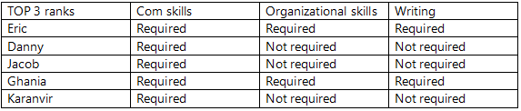

A2 - owo
Ideal Jobs + Personalities + Industry Data
Read about the comparison between our ideal jobs, personality types and industry data
Ideal Jobs
Within our given fields, there are a few similarities, but they are mostly very different. Similarities such as programming fluency and working in a team-based environment, but the differences range from working as an accountant to a penetration tester - two very different fields.
| Job Title | Similarities to Other Jobs |
|---|---|
| Penetration Tester - Karanvir | A penetration tester’s job is the complete opposite of a cybersecurity specialist, as a penetration tester looks for weaknesses in a network and system to breach the security measures and advise the business/organisation how those weaknesses can be dealt with to make the system more secure.
The skills required for this job are similar to that of a data strategy consultant and cybersecurity specialist, which are programming in various languages, problem solving, etc. |
| Cybersecurity Specialist - Jacob | Cybersecurity Specialists are responsible for monitoring, detecting, investigating, and analysing security events. They protect the network/system from threats like hackers, malware, viruses, etc. They also solidify the system by putting security measures in place to account for vulnerabilities and risks to the network. Cybersecurity specialists work in teams and are usually hired by businesses and organisations to protect the integrity of their data.
Cybersecurity is similar to penetration testing and data strategy consulting as it requires similar skill sets, which are fluency in various coding languages, critical thinking, communication, etc. It is a bit different from computer repair technicians as they focus more on hardware components and financial accounting and reporting, which is more related to accounting. |
| Financial Accounting and Reporting - Ghania | The position of a financial accountant doesn’t have too many similarities with the other 4 jobs. However, there are some in the sense that it generally is a team-based environment, having to work with other roles and individuals, there is also the expectation of handling paperwork and working with clients. Although there isn’t too much involvement with programming skills, there are still similarities with the other jobs. |
| Computer Repair Technician - Danny | As a computer repair technician, there will be some level of understanding of software and hardware, as would a cybersecurity specialist would. These would aid the computer repair technician in being able to quickly diagnose any issues for their client.
Not only is it a possibility for a computer repair technician to work for themselves as a small business owner, but it would also be possible for them to be working collectively with others. Just like the other jobs, reporting and filing paperwork would also be a requirement of the job. |
| Data Strategy Consultant - Applied Intelligence - Eric | There may be some similarity with a cybersecurity specialist. In terms of the data that is collected and analysed, it may need to be protected from online threats. So, having some level of understanding of how information may be breached could help with reducing the potential of the data being exposed. This is the kind of job where someone that is a ‘cyber data analyst’ would come in (Poston, 2019).
Main similarities with the other jobs would be that as a data analyst the job doesn’t just stop or start at the data analyst, it gets handed off to the client to work off of. The data analyst would also be working in a team with other people, just like the other jobs, all with the same goal of satisfying a client’s wants and needs. |
| Skills Required/Occupation | Penetration Tester | Cybersecurity Specialist | Financial Accountant | Computer Repair Technician | Data Analyst |
|---|---|---|---|---|---|
| Programming Proficiency | Yes | Yes | No | Yes | Yes |
| Network Understanding | Yes | Yes | No | No | Yes |
| Understanding Cash Flow | No | No | Yes | No | Yes |
| Technology Proficiency | Yes | Yes | Yes | Yes | Yes |
| Team-based Workplace | Yes | Yes | Yes | Yes/No | Yes |
| Documentation | Yes | Yes | Yes | Yes | Yes |
Personality Profiles
Within ‘Team owo’, there seems to be different personalities, some that may clash and some that are very similar, if not identical to other members in the group. Someone like Karanvir who is very assertive and forward with how he wants things done may not seem to work well with someone like Eric who has the test result as someone who may be more of a leader and usually the more vocal one.
However, there are similarities between Jacob, Ghania and Danny. They all want to do what is best for the team and team members. They don’t want others to feel left out or put down and will generally look to ensure everyone is feeling well and comfortable in the team. It also seems that Eric, Jacob, Ghania and Danny are all good team players and don’t have too many issues working with other members.
Overall, the team seems like they can work well together, and everyone wants what’s best for the team. Each member’s personality trait has something that can be utilised in creating a great assignment.

Industry Data
Shared Key Skills
When considering ranking our ideal jobs in terms of demand we first must establish the outlier of Ghania’s job being outside of IT. Because of this we consulted National Skills Commission Australian Jobs published in 2020.

According to this report Accountants are the most in demand in our sector of this report being clustered as Professional, Scientific and Technical Services. As a result, Ghania’s job ranks highest in terms of demand as in Australia no.1 job in Professional, Scientific and Technical Services is an Accountant. (National Skills Commission Australian Jobs 2020, pg. 7)
As for Danny, Eric, Karanvir and Jacob. First we look (Australian Government Career Pathfinder) so we can rank accordingly.


In an Australian Government capacity each of our ideal jobs are in the Top 20 of IT in terms of job demands.
Rankings after establishing this would be:
1 – Ghania
2 – Karanvir
3 – Eric
4 – Jacob
5 – Danny
The rankings are further confirmed when looking at this graph

Previously cybersecurity had a boom of job demand. According to the Bureau of Statistics, the rate of growth for jobs in information security (Proactive Security) is projected at 37% from 2012–2022—that’s much faster than the average for all other occupations. (Bureau of Labor Statistics) so it is still ahead of IT Automation on the graph as there is still jobs needing to be filled but Burning Glass Technologies predicts IT Automation to grow 59% over the next 5 years (Louis Columbus, Top 10 Tech Job Skills Predicted to Grow The Fastest in 2021, Dec. 2020). As a result Penetration Tester is still ranked above a Robotic Process Automation Developer. A cyber security specialist is a role that requires further experience so naturally there are less openings. Parallel Computing is probably most closely related to Danny’s ideal job and as you can see there is still decent demand in this.
Shared Key Skills
1. Knowledge of Security policies and guidelines outlined by the Australian Government
2. Software and hardware expertise
3. experience in data analysis and applied quantitative work
4. Reporting responding to information and data requests
5. Reporting responding to information and data requests
Shared Basic Skills
1. Good communication skills to interact with clients, users, management and developers.
2. The ability to cope with pressure and challenges.
3. Problem-solving abilities.
4. Self-Motivated
Group skills from the list

Eric
Communication, Word + Office, Comp Skills and Project Management
Jacob
Communication, Problem Solving, Research and Building Effective Relationships
Karanvir
Communication, Problem solving Analytical skills Critical Thinking
Danny
Communication, Problem solving and Comp Skills + Typing
Ghania
Organization skills, Word + Office, Communication Skills, Microsoft Excel and Comp skills + typing
How do the general skills in your required skill set rank in terms of demand from employers?
When we view the table we can see the number 1 general required skill is to be able to communicate/ interact with people like clients, users, management and developers. You must have good communication skills because exchanging of information is required for a job. Everyone on the team has a share of communication as there basic skills therefor the ranking of communication is a very demanding skill.
The ability to cope under pressure and challenges can come in different forms of skills such as time management, planning and meeting deadlines although these skills sit at a medium rank it does suggest that these skills arent very demanding but because these skills add up into 1 skill for coping under pressure and challenges it averages around rank 16. The team has to have a strong work ethic when under pressure because then they will perform the job poorly and cause issues in the long run. Employers perhaps can look for people who can work under pressure because people who are under pressure just work as poorly as somebody who is inexperienced.
Problem solving is a high key skill because when we hit obstacles , we need to overcome them. Without overcoming them we will never be able to solve issues/problems, It is ranked 8 on the table because employers look for people who can fix problems in the business because the responsibility would consistently be put onto the managers if an issue always occurs but if an employee takes care of it then it puts the business less pressured.
Self Motivated, being a healthy employee leads to a healthy work environment because self motivation can drive us to do things and push ourselves to fulfill goals. This isn’t on the list for our shared base skills but employers do look for hard workers.
What are the three highest ranked general skills which are not in your required skill set?
Of the top 3, 3 of us do not require the skill set. None of us noted Customer Service as a key skill set at rank #4 That is the next highest we do not require. This is probably due to the jobs not being extremely front-facing to a customer unless it is required of the job in comparison to a job like bartending or retail. The final highest one not required in our skill set is Planning. We think this is more a case of not knowing exactly what to plan therefore we don’t see it as a skill until we actually know the time frames around it.
How do the Specialized skills in your required skill set rank in terms of demand from employers?

According to (Beyond Tech: Rising in Demand for IT Skills in Non-tech industries) in the US of the year 2018 these skills were most in-demand.
Jacob (IT Skills)
- GRC Compliance
- C and C++
- Python(In Top 5 Tech Sector)
- Javascript (In Top 5 Tech Sector)
- PHP
- SQL(In top 5 Tech, Finance and Manufacturing Sector)
- Security Policy Framework
- Information Security Manual
- NV1 Clearance
- Remediation Action Plan
Eric (IT Skills)
- Knowledge of New technology
- Consulting on New technology
- Ability to assess Efficiency (Cost,Performance and Sustainability
- Implementing tools and infrastructures to support innovation
- Reporting on Efficiency and Innovation
- SQL(In top 5 Tech, Finance and Manufacturing Sector)
- Data Analysis(In top 5 Finance Sector)
- Technical Support (In top 5 Manufacturing Sector)
Danny (IT Skills)
- Hardware Knowledge
- Software Knowledge
- Maintenance of Infrastructure
- Installation of Infrastructure
- Decommision of Infrastructure
- System Compatibilities
- Techinical Support
Karanvir (IT Skills)
- Remediation Action Plan
- C and C++
- Python (In top 5 Tech Sector)
- Javascript (In top 5 Tech sector)
- SQL (In top 5 Tech, Finance and Manufacturing Sector)
- Exploit Testing in Virtual Environments: VMware Workstation, Windows XP OS virtual image and Kali Linux virtual image (Virtual Enviroments)
Ghania (Finance Skills)
- Report with Regulators
- Profit Announcement
- Annual Report
- Pillar 3
- Payroll (Part of Payrollers)
- CPA - Accounting Accreditation (Part of Qualified Accountants)
- Big 4 Audit/Advisory experience (Part of Qualified Accountants)
According to (Hays, 2021) Within Australia’s accountancy and finance jobs market, the skills in greatest demand are:
Qualified Accountants who are Big 4 first and second movers and possess strong technical accounting skills, understand accounting standards and have exposure to large and/or listed businesses
Payrollers with end-to-end payroll experience, specific payroll system skills, such as Micropay and Preceda, and the ability to interpret awards and EBAs. Candidates are especially sought for part-time roles
Commercial Analysts who can partner with a business to provide commercial insights and who possess strong software skills including Tableau and Power BI.
What are the three highest ranked Specialized skills which are not in your required skill set?
IT
Linux (Top 5 Tech Sector)
ERP Software (Top 5 Manufacturing Sector)
Software Development (Top 5 Tech, Finance and Manufacturing Sector)
Finance
Tableau (Commercial Analyst)
PowerBI (Commercial Analyst)
EBA (Accounting)
Having looked at Burning Glass Data, has your opinion changed? Why or Why not?
No, our opinion has not changed, as IT students are just beginning our journey and Ghania is in her 3rd year so has already a clear plan of what she is going to do.